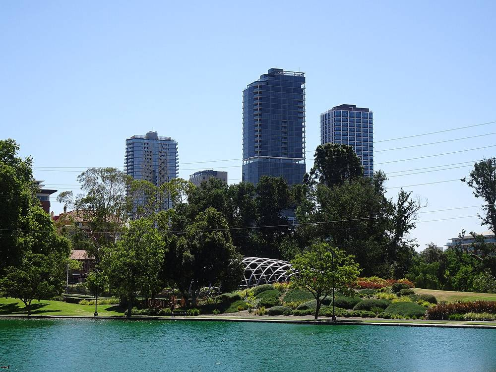

남호주 아파트에도 공동 태양광·배터리, 설치비 절반 보조에 나머지는 무이자 융자

연방·주정부 1,780만 호주달러 투입, 건물 한 곳당 보조금·융자 각 최대 4만7,500 호주달러, 남호주 주민 12명 중 1명이 구분 소유 건물 거주
호주 연방정부와 남호주 주정부가 아파트처럼 여러 소유자가 함께 쓰는 건물에 공용 태양광·배터리를 들이는 사업에 1,780만 호주달러를 지원한다. 11월 15일 공개된 공동 보도자료에 따르면 연방정부는 커뮤니티 솔라 뱅크 사업에서 890만 호주달러를 내고, 이 돈으로 설비 비용의 최대 50%를 보조금으로 준다. 나머지 절반은 청정에너지금융공사(CEFC) 가정 에너지 개선 기금의 무이자 융자로 채울 수 있고, 보조금과 융자는 건물 한 곳당 각각 4만7,500 호주달러가 상한이다.
남호주 정부는 이 지원을 '스트라타차지'(StrataCharge)라는 이름의 사업으로 운영하며, 재생에너지 금융회사 브라이트(Brighte)가 신청을 받는다. 대상은 남호주 약 16만 가구가 사는 구분 소유 건물(여러 소유자가 건물을 나눠 갖고 공용 부분을 함께 관리하는 건물)로, 주민 12명 중 1명꼴이다. 소유자가 여럿이라 설치 승인과 비용 마련, 이익 나누기가 어려웠고, 설비가 들어서면 집주인뿐 아니라 세입자도 전기요금을 줄일 수 있다고 보도자료는 밝혔다. 크리스 보웬 호주 기후변화에너지부 장관은 "아파트에 산다고 더 싸고 깨끗한 에너지의 혜택을 놓쳐서는 안 된다"고 말했다.
시민에너지 관점
남호주 정부 사업 안내에 따르면 신청자는 설비 규모를 정하는 데 도움을 받고, 관리단과 논의할 때 쓸 자료와 신청·승인 절차 지원도 받는다. 융자는 선택 사항이며, 브라이트는 신청자를 자사의 공인 설치업체 네트워크와 이어 준다. 신청은 브라이트 누리집(brighte.com.au/stratacharge)에서 받고, 같은 곳에서 자격을 확인할 수 있다.
출처: Mirage News 2026-11-15 호주 연방정부·남호주 주정부 공동 보도자료 원문 보기
출처: 남호주 정부 에너지광업부 2026-11-18 확인 StrataCharge 사업 안내 원문 보기
南オーストラリアの集合住宅にも共同の太陽光・蓄電池、設置費の半分を補助し残りは無利子融資
連邦・州政府が1,780万豪ドルを投入、1棟あたり補助金・融資とも最大4万7,500豪ドル、南オーストラリアは住民12人に1人が区分所有の建物に居住
連邦政府と南オーストラリア州政府が、集合住宅のように複数の所有者が共同で使う建物に共用の太陽光・蓄電池を導入する事業へ、1,780万豪ドルを支援する。11月15日に公開された共同プレスリリースによると、連邦政府は「コミュニティ・ソーラー・バンク」事業から890万豪ドルを出し、設備費の最大50%を補助金として支給する。残りの半分は、クリーンエネルギー金融公社（CEFC）の家庭エネルギー改善基金による無利子融資で賄うことができ、補助金と融資は1棟あたりそれぞれ4万7,500豪ドルが上限となる。
州政府はこの支援を「ストラタチャージ」（StrataCharge）という事業として運営し、再生可能エネルギー金融会社のブライト（Brighte）が申請を受け付ける。対象は南オーストラリアの約16万世帯が暮らす区分所有の建物（複数の所有者が建物を分け合い、共用部分を共同で管理する建物）で、住民の12人に1人にあたる。所有者が複数いるため、設置の承認や費用の調達、利益の分配が難しかったが、設備が入れば持ち主だけでなく賃借人も電気料金を減らせると、プレスリリースは述べている。クリス・ボーエン気候変動・エネルギー大臣は「アパートに住んでいるからといって、より安くよりクリーンなエネルギーの恩恵を逃してはならない」と語った。
市民エネルギーの視点
州政府の事業案内によると、申請者は設備の規模を決める際の助言を受けられ、管理組合と話し合うための資料や、申請・承認の手続き支援も受けられる。融資は任意で、ブライトは申請者を同社の認定施工業者ネットワークにつなぐ。申請はブライトのウェブサイト（brighte.com.au/stratacharge）で受け付けており、同じ場所で資格も確認できる。
出典: Mirage News 2026-11-15 호주 연방정부·남호주 주정부 공동 보도자료 原文を読む
出典: 남호주 정부 에너지광업부 2026-11-18 확인 StrataCharge 사업 안내 原文を読む
南澳公寓也能装共享光伏和电池，补贴一半安装费，其余提供无息贷款
联邦与州政府投入1,780万澳元，每处物业补贴与贷款各最高4万7,500澳元，南澳每12名居民中有1人住在分层产权建筑
澳大利亚联邦政府和南澳大利亚州政府，将拿出1,780万澳元，支持公寓这类由多位业主共同使用的建筑安装公共光伏和电池。根据11月15日公布的联合新闻稿，联邦政府从“社区太阳能银行”项目中出资890万澳元，用于补贴最多50%的设备费用。其余一半可通过清洁能源金融公司（CEFC）家庭能源升级基金的无息贷款解决，补贴和贷款每处物业各以4万7,500澳元为上限。
南澳州政府把这项支持作为名为“StrataCharge”的计划来运作，由可再生能源金融公司Brighte受理申请。对象是南澳约16万户居住的分层产权建筑（由多位业主分享建筑、共同管理公共部分的建筑），约占居民的每12人中有1人。由于业主众多，安装审批、资金筹措和收益分配一直困难，新闻稿称，设备安装后，不仅业主，租户也能减少电费。澳大利亚气候变化与能源部长克里斯·鲍文表示：“住在公寓里，不该因此错过更便宜、更清洁的能源带来的好处。”
市民能源视角
根据南澳州政府的计划介绍，申请者在确定设备规模时可获得指导，还能得到与业主管理机构（管理委员会）商议时使用的资料，以及申请和审批流程方面的协助。贷款为自愿选择，Brighte会把申请者与其认证安装商网络对接。申请通过Brighte网站（brighte.com.au/stratacharge）受理，也可在同一页面确认资格。
来源: Mirage News 2026-11-15 호주 연방정부·남호주 주정부 공동 보도자료 查看原文
来源: 남호주 정부 에너지광업부 2026-11-18 확인 StrataCharge 사업 안내 查看原文
Shared solar and batteries reach South Australian apartments, with half the cost in grants and the rest in zero-interest loans
Federal and state governments commit A$17.8 million; grants and loans are each capped at A$47,500 per building; one in 12 South Australians lives in strata
The Australian and South Australian governments will put A$17.8 million into installing shared solar and batteries in buildings that many owners use together, such as apartment blocks. According to a joint media release published on November 15, the Commonwealth is contributing A$8.9 million from its Community Solar Banks program to pay grants of up to 50% of equipment costs. The other half can be covered by a zero-interest loan from the Clean Energy Finance Corporation's Household Energy Upgrades Fund, and grants and loans are each capped at A$47,500 per building.
The state runs the support as a program called StrataCharge, and renewable energy financier Brighte takes the applications. It targets strata buildings (buildings where several owners share the property and manage common areas together) that are home to about 160,000 South Australian households, one in 12 residents. Because there are many owners, approval, financing and benefit-sharing have been hard, and once systems are installed the release says tenants as well as owners can cut their bills. Chris Bowen, Australia's Minister for Climate Change and Energy, said: "Living in an apartment shouldn't mean missing out on the benefits of cheaper, cleaner energy."
Citizen Energy View
According to the state's program page, applicants get help sizing a system, material for discussions with their strata body, and support with the application and approval process. The loan is optional, and Brighte connects applicants with its accredited installer network. Applications go through Brighte's website (brighte.com.au/stratacharge), where eligibility can also be checked.
Source: Mirage News 2026-11-15 호주 연방정부·남호주 주정부 공동 보도자료 Read the original
Source: 남호주 정부 에너지광업부 2026-11-18 확인 StrataCharge 사업 안내 Read the original